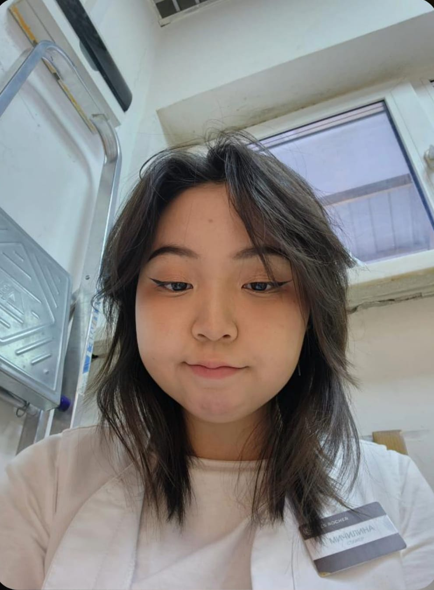

And that is why..once again I wanna say it... Misha please be my sweetheart... My Lover so that I can give you all the Love I have!!
(p.s I wanted to sing for you too.. I mean I did record a clip.. but my vocals are kinda fcked rn because of surgery.. I'll practise hard and sing for you even better.. if you wanna hear that clip tell me~ )
I mean look at this girl who can't fall for such a beauty hehehehe (it's my fav photo of yours and please send me more in future :33 )
It's not been too long since we met.. so Misha I want us to learn about each other together.. together as lovers.. But I know one thing for sure.. that I really reallyyy loveeeee you and you are the one who made me want to love someone else again... and I want you to be the only one I wanna ever love.
This past month after meeting you seems like a dream to me..My mornings start with your messages and my night ends with you in my thoughts and good dreams which you wish me :3 ...
I never want this dream to ever end.
Our first meeting was us sharing our previous love failures.. But Misha... you know I am glad.. that because of our those experiences.. I got to meet you.
The only thing I hate is not being with you when you were lonely and needed someone... I am so glad that you pushed through all those feelings you had at that time... Thank you Misha.. for being alive.. otherwise I'd have never got to meet you.
And I wanna make sure.. that you never feel that way ever again..I wanna be your emotional support..someone you can lean on..and someone you can love.
And let's just not forget about your beauty... as it's unforgettable~ (hehe nice pickup line) Girl seeing your photo and yeah those eyes... they make my heartbeat go faster. I love you for that
Babe.. If I start mentioning everything about you this website is gonna crash xD as this site is not enough to express everything I like about you.. I'd rather telling you directly ehe~
I love everything about my Misha. I might have not seen you irl.. but seeing you in my notifications has always put a smile on my face. I started to wake up early just so that I can talk to you..
You are the most hardworking girl I have ever met... earning for yourself at this age is not easy for anyone at our age. Yet you make it look so normal.. I love you for that.
Your family situation doesn't stops you and you continue to live and find happiness for yourself.. I love you for that.
You are annoying, funny, cute and beat my ass in tcg...but you know.. I enjoy ever single second with you and all of your emotion you show me... I love you for that.
You entering in my world and I accepting your request.. Isn't that how romance drama usually starts? Well even if it happened in a game, for me it's my romantic encounter hehe.
This past month you are 24x7 in my mind >_< Misha.. you are the angel who managed to make me love again after 4 years.
well you know what? He already found you 1 month ago hehe~
Yes babe..it's me and I am all serious. I love you..I realised it when I heard your silly but cute laugh That I have started developing feelings for you.
Hello my sleepyhead... So yeah this the surprise I was talking about...
Do you remember when i told you somedays ago how your lover will soon find you?
Babe use the mouse to drag the papers...